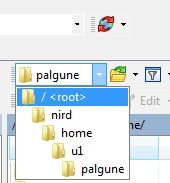

Using WinSCP to transfer files¶
To access data on NIRD or an HPC cluster (Fram and Saga) using a graphical interface, you will need to install and use specialized software.
As an example, we will here present how to use the program WinSCP to access NIRD. The procedure will be similar for Fram and Saga. WinSCP is a Windows program. If you are on Linux or Mac you need to use a different program, like for instance sftp, FileZilla, or Cyberduck.
Installation on Windows¶
Download the program from https://winscp.net/eng/download.php.
When the installation file is downloaded, double click on it and follow the instructions for installing the program.
Connecting to NIRD with WinSCP¶
Start WinSCP. You should see something like this:

Fill in these values
Host name: login.nird.sigma2.no
User name: Your username
Password: Your password
Save the configuration by pressing the Save button.
Log in to NIRD by pressing the Login button
If this is your first login, you should see your home folder at NIRD in the right column of the WinSCP window. Since data at NIRD is located in projects we need to navigate there.
Use the dropdown menu:

And navigate to the
/<root>folder.From the
/folder move into the projects folder and select your project.Navigate to the desired place in the project folder.
Downloading and uploading files and folders¶
When connected to a server (NIRD in this case), the WinSCP window shows two file areas in the two large panels. The left panel is your local computer, the right panel the server.
To download data, navigate to the folder on the server where the files of interest are located. In the left panel, navigate to the place you want to download the files to. Now you can either right click the file or folder and select Download, or drag and drop the file or folder from the right panel to the left panel. Follow the dialogue boxes and wait for the download to finish. Usually, the standard suggestions should be reasonable.
Uploading works similarly. Just navigate to the right folders on your local computer and on the server and drag and drop a file or folder from your local computer (left) to the server (right). Alternatively, you can, again, right click on the file or folder of interest and choose Upload. Follow the dialogue boxes and wait for the upload to finish. Usually, the standard suggestions should be reasonable.